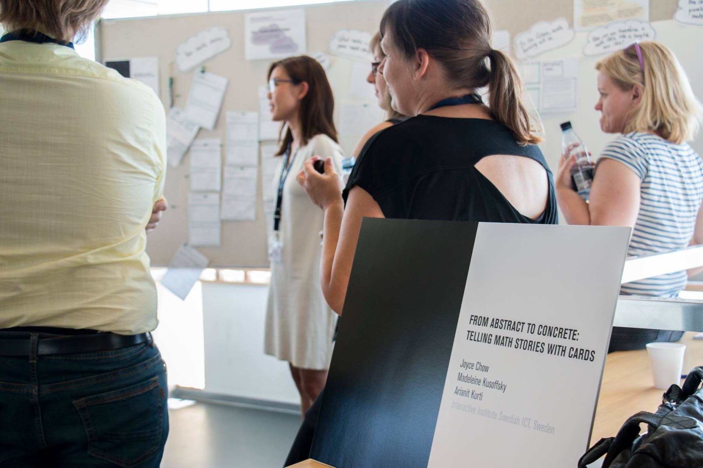
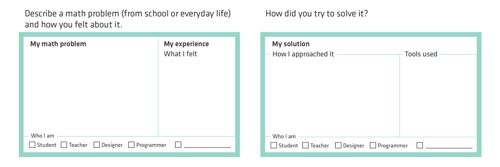
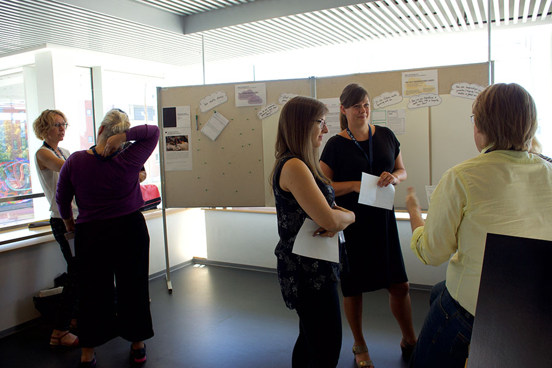
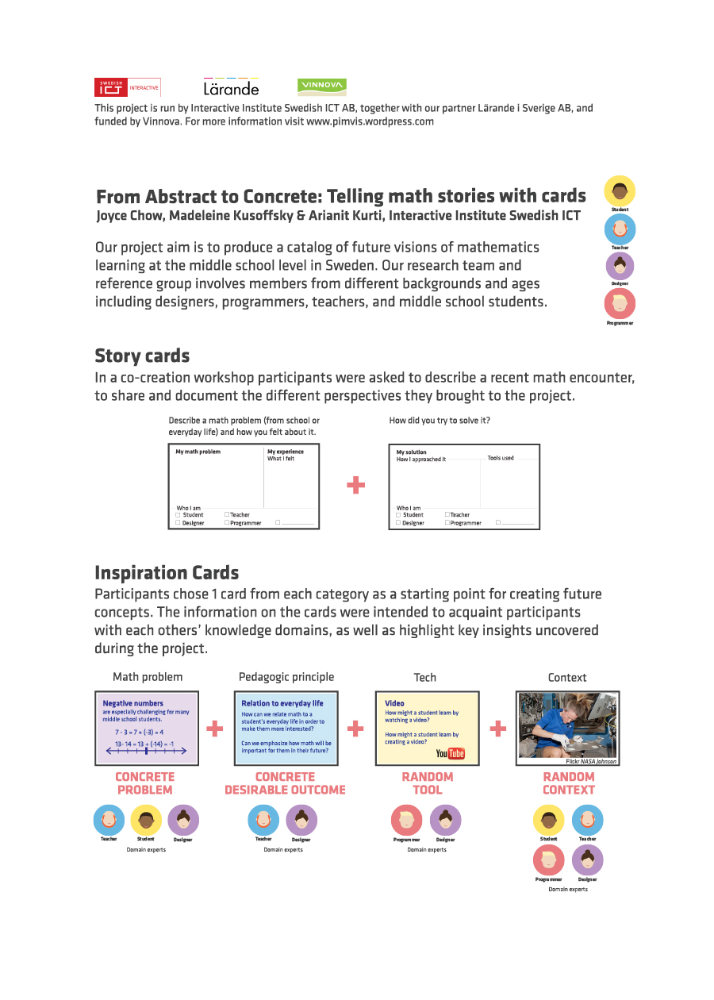

14th Participatory Design Conference in Aarhus, Denmark
I had the honor of running two workshops at the Participatory Design Conference in Aarhus, Denmark on August 17, 2016. Through hands-on, interactive exhibitions, conference participants could try out the methods we have been exploring in an educational project about math learning. How might math learning in schools be enhanced by pedagogic, interactive visualizations? To find out, we have involved teachers, pedagogues, students and programmers.
Breaking the ice through stories
In one of the workshops with teachers, students and programmers, we attempted to spark conversations within these diverse groups. We asked participants to write their math story on a card which they would share in small groups. The aim was that through sharing personal stories, workshop participants would gain better empathy and understanding of one another's situation and experience, and that we, the designers, would also gain insight from the results.
The interactive exhibition workshops at the Participatory Design Conference
I ran two mini-workshops where participants were able to try out Math Story Cards and Inspiration Cards developed during our project. The first group of participants were invited to write down their math story, and then share them in small groups.
The findings
The story cards were a starting point, since there were so many more details to say about the context. Good stories involved many details of the context, and connected abstract concepts to concrete physical objects and real life experiences
Surprisingly, emotions that arose in these stories were almost entirely negative, such as- worry, helplessness for their child learning math
- fear, trauma from prior negative experiences
- laziness
- feeling (pleasantly or negatively) challenged
- overwhelmed
- confusion, unsure, puzzled of the actuality
- pressed for time
- feeling that some aspects are not easily quantified and analysed (e.g. buying airplane tickets, time tradeoffs)
The second workshop group carried on with developing these stories into Inspiration Cards. Looking at the results of the mini-workshops, as well as in conversations with other conference attendees, I think that there are many variations in how Math Story Cards could be used. As a design practitioner, I am constantly looking to refine and improve my own methods.
More than one person commented, “Everybody has a math story!” Math is something that everyone has strong opinions and feelings about. Being able to tell your story, even when (or especially when?) negative, was something most participants enjoyed doing.
The full paper is available for download from ACM here: From abstract to concrete: telling math stories with cards
My role
These methods were developed through our work in a project that explores future ideas for math education in Swedish middle schools. My role in this project was in co-writing the project proposal which was accepted for funding by Vinnova, background research, user observations and interviews of students and teachers, planning design workshops, concept development and documentation.